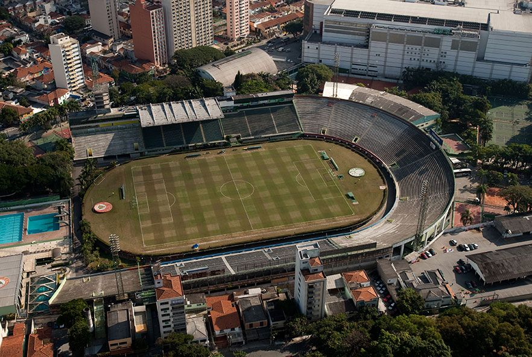
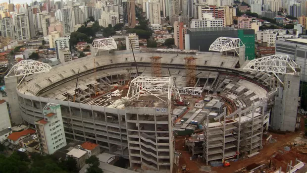
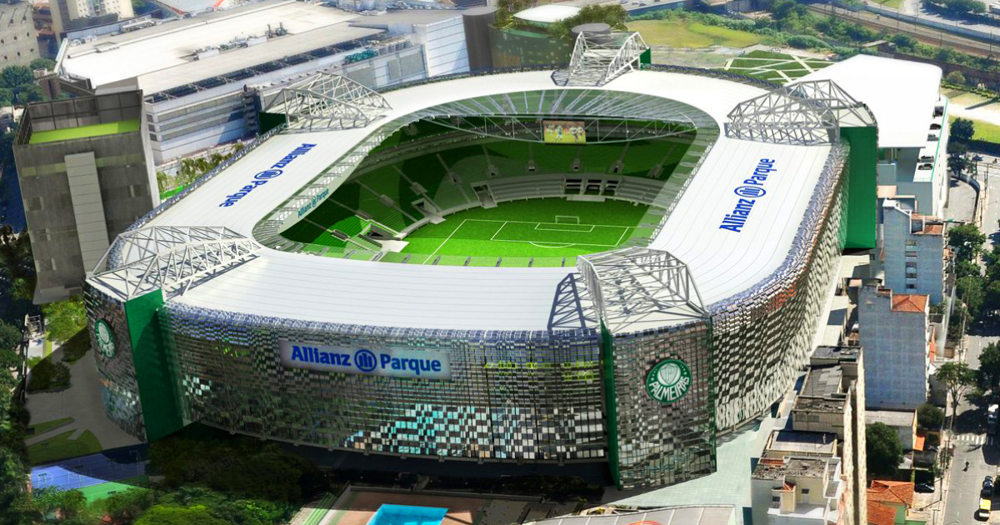

O antigo estádio do Palmeiras, conhecido como Palestra Itália, foi um marco na história do clube. Localizado na região da Barra Funda, em São Paulo, o estádio foi inaugurado em 1917 e se tornou o lar do clube por muitas décadas. O Palestra Itália era mais do que um simples estádio de futebol, era um símbolo de identidade e orgulho para os palmeirenses. Com capacidade para mais de 35.000 espectadores, o estádio testemunhou inúmeras conquistas do clube, desde campeonatos estaduais até títulos nacionais e internacionais.
Construído em estilo neoclássico, o Palestra Itália era uma verdadeira obra de arte arquitetônica. Sua fachada imponente era adornada por colunas e detalhes ornamentais, e seu interior oferecia uma atmosfera única e vibrante durante os jogos.
No entanto, com o passar dos anos, o estádio começou a mostrar sinais de desgaste e necessitava de reformas significativas para atender aos padrões modernos de segurança e conforto. Foi então que surgiu a ideia de construir um novo estádio que pudesse atender às demandas do clube e de seus torcedores.

A reforma do antigo Palestra Itália para se tornar o moderno Allianz Parque marcou uma transformação significativa na infraestrutura e na experiência esportiva em São Paulo. Iniciada no início do século XXI, a revitalização visava não apenas atualizar as instalações, mas também preservar a rica história do clube e do estádio.
Durante o processo de reforma, o Allianz Parque incorporou inovações e modernizações que o transformaram em um dos estádios mais avançados do Brasil. A introdução de assentos premium, tecnologia de ponta em termos de iluminação e sonorização, além de um gramado de alta qualidade, proporcionaram uma experiência única para os torcedores e jogadores.
Além de ser a casa do Palmeiras, o Allianz Parque se tornou um polo de entretenimento e eventos. Sua versatilidade permitiu a realização de shows, convenções e outros eventos, contribuindo não apenas para o clube, mas também para a comunidade local. A reforma, portanto, não apenas modernizou o estádio, mas também ampliou seu papel como um importante centro cultural na cidade de São Paulo.

Finalmente, ALLIANZ PARQUE
O Allianz Parque, localizado no coração de São Paulo, emergiu como um símbolo de modernidade e excelência após uma extensa e ambiciosa reforma. Esta revitalização não apenas redesenhou a estrutura física do estádio, mas também redefiniu a experiência dos torcedores, consolidando sua posição como um dos locais esportivos mais avançados e acolhedores do Brasil. A expansão da capacidade do estádio foi uma das mudanças mais marcantes, permitindo que um número ainda maior de aficionados participe dos emocionantes eventos esportivos realizados no local. Os novos assentos, ergonomicamente projetados e mais espaçosos, elevaram o conforto a níveis inéditos, transformando cada visita ao Allianz Parque em uma experiência verdadeiramente luxuosa e memorável para os torcedores.
No que diz respeito à infraestrutura, a modernização não se limitou apenas a melhorias visíveis. Sistemas tecnológicos de última geração foram implementados em toda a estrutura, desde a iluminação até os telões de alta resolução, proporcionando uma qualidade visual extraordinária. Essas inovações não apenas melhoraram a experiência durante os eventos esportivos, mas também abriram espaço para a realização de espetáculos de entretenimento de classe mundial. A sustentabilidade foi uma consideração essencial durante o processo de reforma. A introdução de práticas ecoeficientes, como a captação de água da chuva para uso interno e a implementação de sistemas de energia mais eficientes, demonstrou um compromisso inequívoco com a responsabilidade ambiental. O Allianz Parque não é apenas um ícone esportivo, mas também um modelo para instalações sustentáveis em todo o país.
Além das melhorias estruturais, os espaços de entretenimento foram expandidos para atender às diversas necessidades e preferências dos torcedores. Restaurantes sofisticados, áreas de lazer para crianças e uma variedade de opções gastronômicas transformaram o Allianz Parque em um destino multifuncional. O estádio não é apenas um local para eventos esportivos; é um centro de entretenimento completo que atrai uma gama diversificada de públicos. Em síntese, a reforma do Allianz Parque não apenas modernizou suas instalações, mas também elevou a experiência global, transformando-o em um marco arquitetônico e esportivo. Este icônico estádio continua a ser uma testemunha viva da paixão pelo esporte, oferecendo uma fusão harmoniosa de inovação, conforto e sustentabilidade. O Allianz Parque não é apenas um estádio; é um epicentro de experiências extraordinárias, enraizado na rica tradição esportiva do Brasil.
